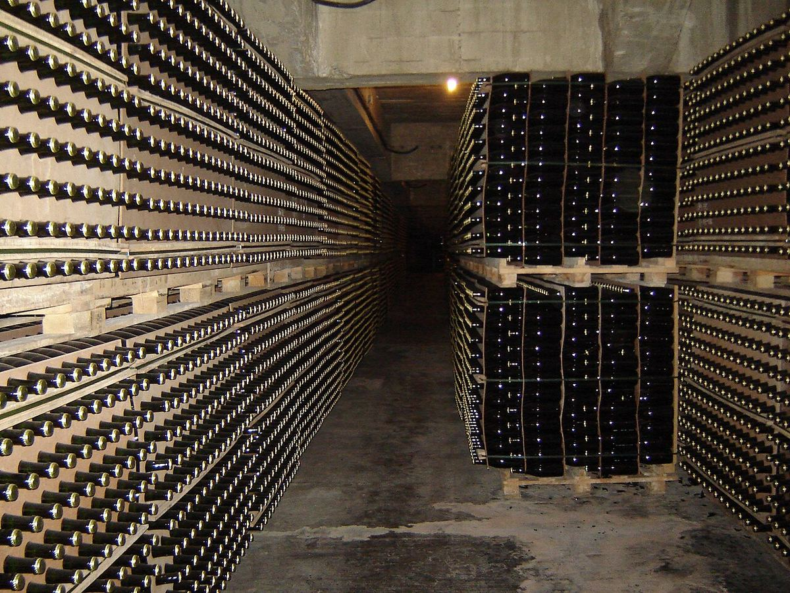

EFFERVESCENT
L'une des maisons les plus anciennes et emblématiques du Cava, à Sant Sadurní d'Anoia, liée aux premiers effervescents de méthode traditionnelle élaborés en Espagne et à des caves modernistes classées monument.

La famille liée à Codorníu documente son activité viticole à Sant Sadurní d'Anoia depuis le XVIe siècle. Le nom vient de la famille Codorníu, dont l'héritière, Anna de Codorníu, épousa Miquel Raventós au XVIIe siècle ; depuis, la maison est liée au nom Raventós.
Dans les années 1870, Josep Raventós élabora chez Codorníu les premiers effervescents de méthode traditionnelle —avec seconde fermentation en bouteille— à partir des cépages autochtones du Penedès : macabeu, xarel·lo et parellada. Cette étape est considérée comme l'un des points de départ de l'industrie du cava, qui fit de Sant Sadurní sa capitale.
Les caves de Codorníu, conçues par l'architecte moderniste Josep Puig i Cadafalch à la fin du XIXe et au début du XXe siècle, ont été déclarées Monument historique et artistique. Sous elles s'étendent des kilomètres de galeries souterraines où les bouteilles reposent pendant leur élevage.
La gamme comprend des cavas largement diffusés et d'autres à plus long élevage. Anna de Codorníu, hommage à l'ancienne héritière de la famille, fut l'un des premiers cavas à intégrer du chardonnay. La maison élabore aussi des cavas de Paraje Calificado et fait partie d'un groupe possédant des domaines dans d'autres appellations.
Les caves historiques de Sant Sadurní d'Anoia se visitent lors de parcours guidés dans les bâtiments et les galeries souterraines, qui se terminent généralement par une dégustation.